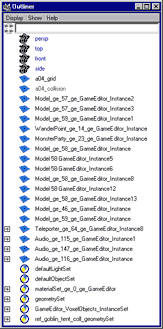
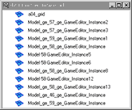

outlinerSelected
Creates a custom Outliner window which displays only the currently selected nodes. The contents of this Outliner is persistent and will not be altered by subsequent node selection.
The title of the Custom Outliner window will be "Outliner (Custom)". The name for this window when iconized is "Outliner*" -- the asterisk denotes it as a custom Outliner.
Compare the normal Outliner on the left with a custom Outliner on the right.
| The normal Outliner | A custom Outliner |
|  |  |
Note: Currently the custom Outliner does not support a menu bar, nor the Text Filter or Show Filter.
Select one or more nodes and call this script.